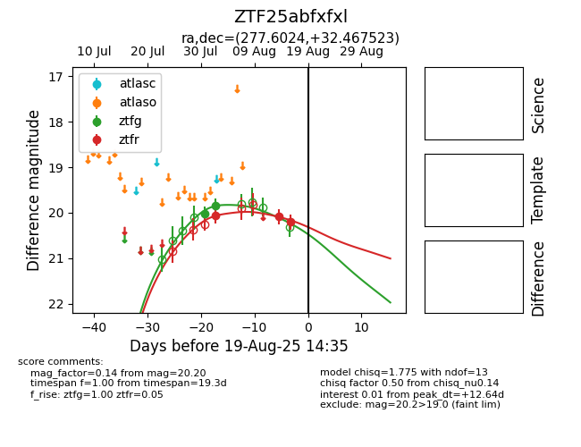

Target ZTF25abfxfxl at 2025-08-06 17:45, see:
FINK: fink-portal.org/ZTF25abfxfxl
Lasair: lasair-ztf.lsst.ac.uk/objects/ZTF25abfxfxl
ALeRCE: alerce.online/object/ZTF25abfxfxl
alt names
ZTF25abfxfxl (ztf,fink)
coordinates:
equatorial (ra, dec) = (277.6024,+32.46752)
galactic (l, b) = (60.7083,+18.27515)
photometry
last ztfg=19.85, ztfr=20.05
2 ztfg, 1 ztfr detections
